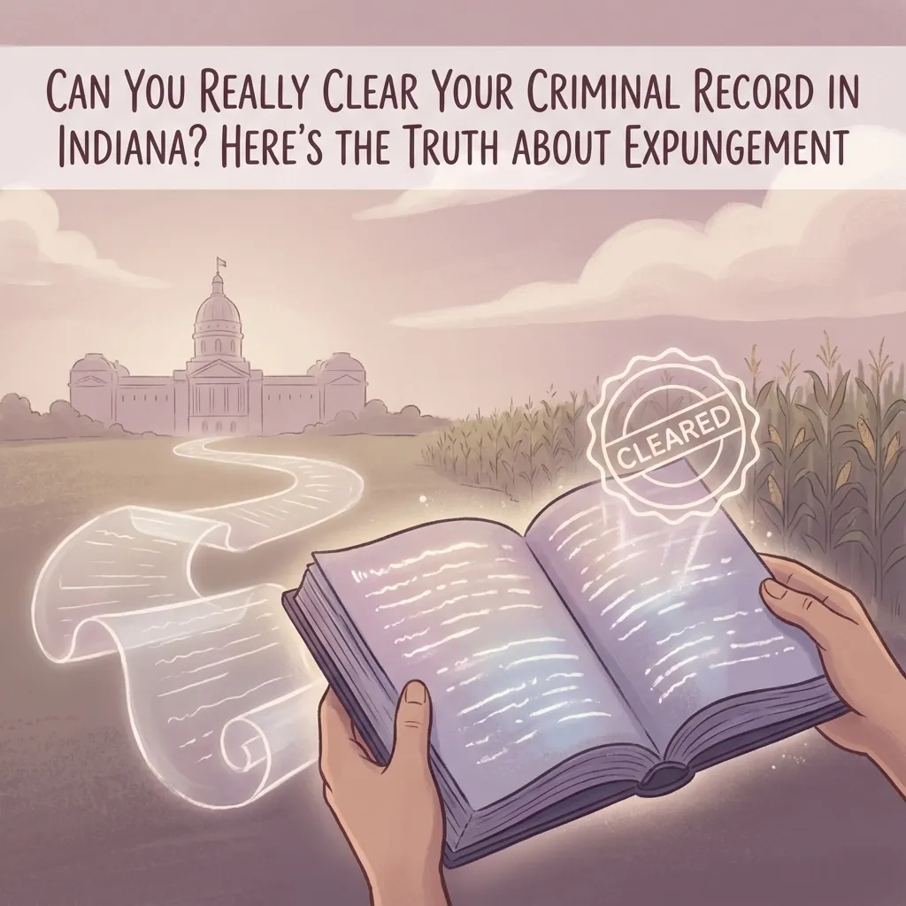
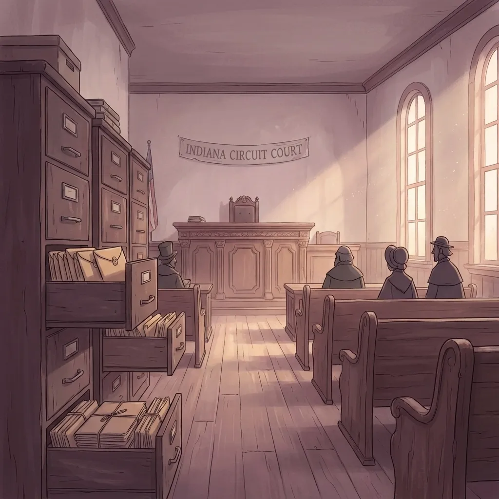
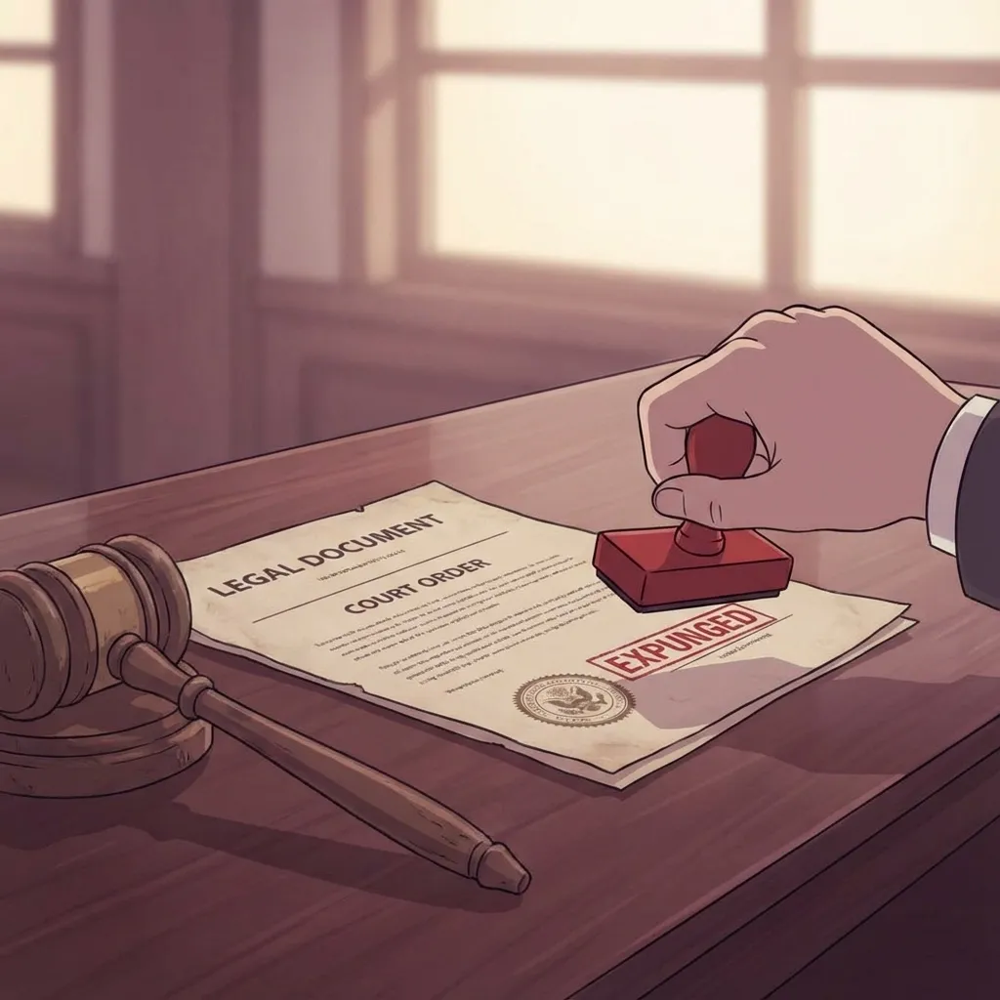
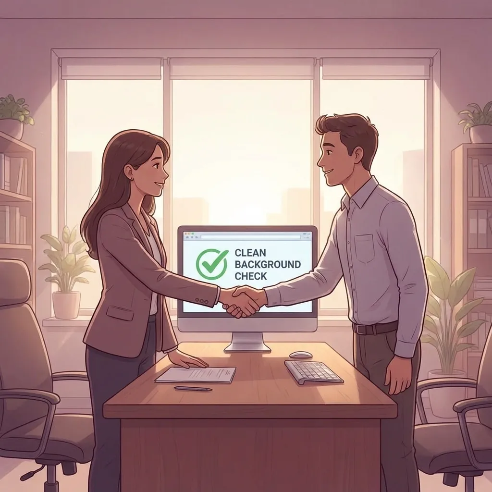

Can You Really Clear Your Criminal Record in Indiana? Here's the Truth About Expungement

If you're living in North Vernon, Jennings County, or anywhere in rural Indiana with a criminal record holding you back, you've probably wondered if you can really make it disappear. The short answer is yes: but there's more to the story than just "clearing" your record.
Let me break down exactly what expungement can and can't do for you, who qualifies, and why having a local attorney who understands Indiana law makes all the difference.
What Expungement Actually Means in Indiana
Here's the truth: expungement doesn't erase your criminal record like it never happened. Instead, it seals your records from public view under Indiana Code 35-38-9. Think of it like putting your records in a locked filing cabinet that most people can't access.

The level of sealing depends on what type of offense you're dealing with. Records for arrests that didn't lead to convictions, misdemeanors, and Level 6 felonies get completely sealed: meaning employers, landlords, and the general public can't see them during background checks.
But major and serious felonies work differently. Even after expungement, these records stay publicly viewable, though they must be clearly marked as "expunged." It's not perfect, but it's still better than having an unmarked conviction showing up.
Who Can Get Their Record Expunged in Indiana
Not everyone qualifies for expungement, and the rules are pretty specific. Under I.C. 35-38-9, your eligibility depends on several factors.
If you were arrested but never convicted (charges dropped, found not guilty, or completed a diversion program), you need to wait at least one year from your arrest date. During that year, you can't have any new convictions, pending charges, or fail to complete your diversion program requirements.
If you were convicted, the waiting periods get longer and depend on the severity of your offense.
There's one exception to these waiting periods: if you can get written consent from the prosecutor in your case, you may be able to petition for expungement early.
The Requirements You Must Meet
Even if you've waited long enough, you still need to check all these boxes before filing your petition:
Financial obligations. Every fine, fee, court cost, and restitution payment must be paid in full. This includes any administrative fees or probation costs. Courts won't consider your petition if you owe money.
Clean record during waiting period. For conviction cases, you can't have any new criminal convictions during your 8-10 year waiting period. Even a small misdemeanor can reset the clock.
No pending charges. You can't have any criminal cases currently working their way through the courts.
Filing fee. You'll need to pay the court's expungement filing fee when you submit your petition.
Courts take these requirements seriously. People regularly get turned down if everything is not perfect or because they forgot about an old unpaid fine from a different county.
How the Expungement Process Actually Works
Here's what happens once you decide to move forward with expungement:
File in the right court(s). Your petition goes to the circuit or superior court(s) in the counties where you were charged or arrested.
Wait for prosecutor review. The prosecutor has 30 days to object to your petition. They might object if they believe you don't meet the requirements or if there are public safety concerns.
Court decision. If the prosecutor doesn't object, the judge can approve your expungement without a hearing. If there is an objection, the court schedules a hearing at least 60 days after you filed.
Timeline. Most uncontested cases wrap up in 2-3 months. Contested cases take longer, especially if you need to gather additional documentation or witnesses.

What Happens After Your Record Gets Expunged
Once the judge signs your expungement order, several things happen automatically:
Sealed records. For eligible offenses, your records become sealed from public access. Employers, landlords, and background check companies can't see them.
Legal answers. You can legally say you weren't arrested or convicted for expunged offenses in most situations, including job applications and housing applications.
Exceptions still exist. Certain employers (like schools, healthcare facilities, and financial institutions) might still be able to access expunged records. Law enforcement can always see them.
Not automatic. Expungement doesn't happen on its own. You must file the petition and follow through with the legal process.
Why Local Legal Help Makes a Difference
Expungement might seem straightforward on paper, but the reality is more complicated. Indiana courts handle these petitions differently, and what works in Marion County might not fly in Jennings County.

As a small town lawyer who handles cases throughout rural Indiana, I've seen people try to navigate expungement on their own and run into problems. Maybe they filed in the wrong court, missed a requirement, or didn't properly serve the prosecutor. These mistakes can delay your case for months or even get it dismissed.
When you work with someone familiar with local courts in North Vernon, Commiskey, Hayden, or Scipio, you get someone who knows the judges, understands how local prosecutors typically respond to expungement petitions, and can spot potential problems before they derail your case.
I've helped people throughout Jennings County and Indiana get their records expunged, and I've learned that attention to detail matters. Making sure all your fines are paid, gathering the right documentation, and properly formatting your petition can mean the difference between success and having to start over.
Is Expungement Right for You?
Expungement can open doors that have been closed because of your criminal record. Better job opportunities, housing options, and the peace of mind that comes with leaving the past behind are all real benefits.
But it's not right for everyone. If you have multiple convictions, serious ongoing legal issues, or unrealistic expectations about what expungement accomplishes, it might not be worth the time and expense.
The best way to find out is to have someone review your specific situation. Every case is different, and what matters is whether expungement will actually help you achieve your goals.
Moving Forward
If you're tired of your criminal record holding you back and you think you might qualify for expungement, don't let it sit on the back burner. The sooner you start the process, the sooner you can move forward with your life.
I listen to what you have to say and give you options that make sense for your situation. Whether you're dealing with an old misdemeanor or a more serious conviction, we can figure out together whether expungement is the right path and how to make it happen.
Ready to explore your options? Contact me to discuss your specific situation and learn whether expungement could help you move forward. There's no charge to talk through the basics, and I can give you a clear picture of what to expect.
Your past doesn't have to define your future, but it takes action to change what's possible.